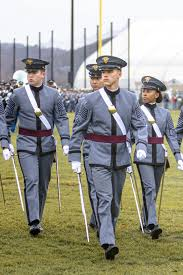
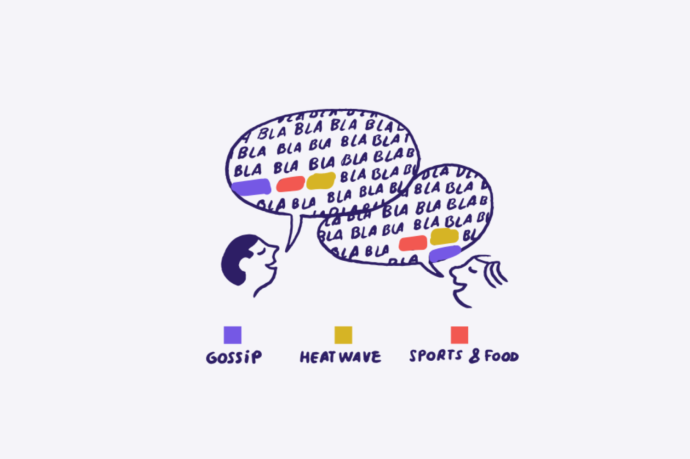
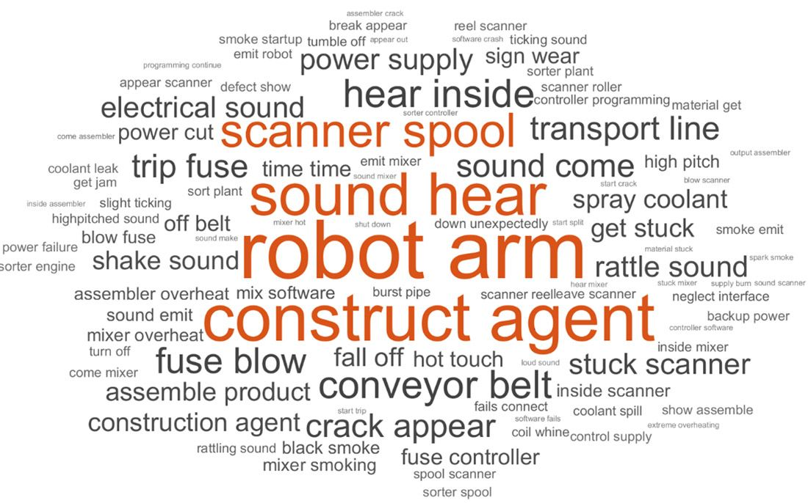
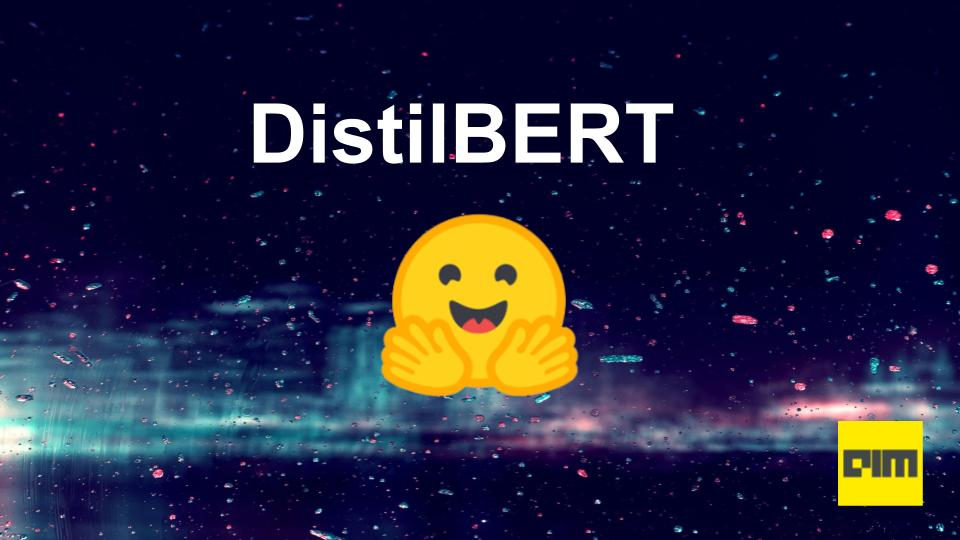

I am a third year student at the United States Military Academy in West Point, NY. I come from Massachusetts, where I was born and raised. In this website, I will introduce you to my project centered on Natural Language Processing (NLP) and its applications.

The United States Military Academy is a four-year institution to prepare civilians for life as officers.
HuggingFace offers a free pipeline for word classification and open source documentation for how to use it.

A sentiment analysis of political figures using mass amounts of tweets pulled from Twitter.

Topic Modeling Assessment Project.

Training CNN's Using Tensorflow
The first homework for this class involves creating a chatbot to respond to user prompts about West Point. The chatbot serves as a West Point tour guide.

In this assignment, I extract the most common n-grams from a set of Spam text messages to determine which phrases are most commonly used in Spam.

In our final project, our group evaluates the performance of Bert vs. DistilBert for question-answer tasks. We also finetune both models to increase their performance and evaluate again.